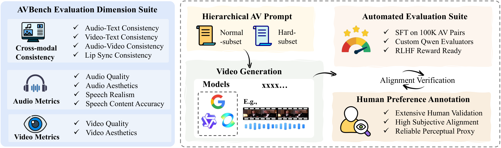
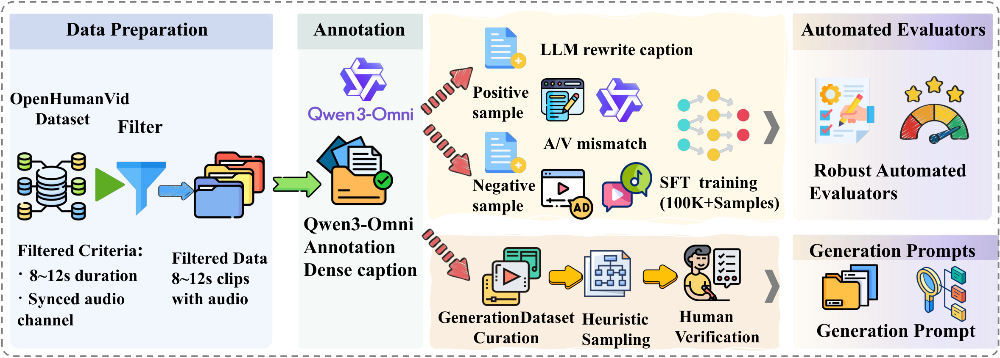
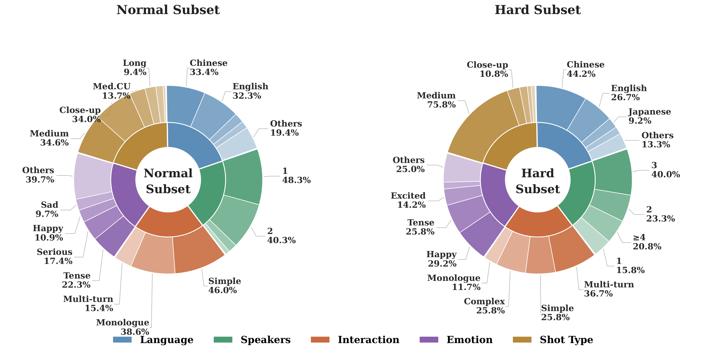
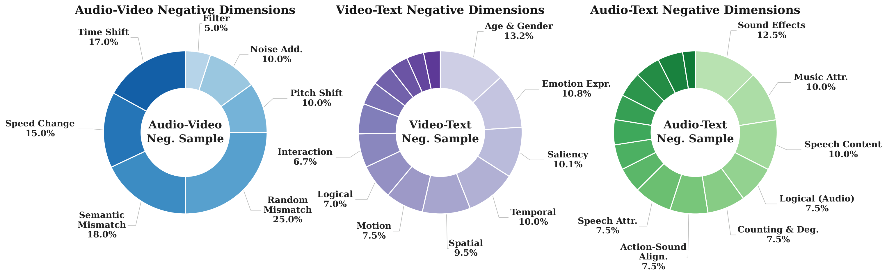
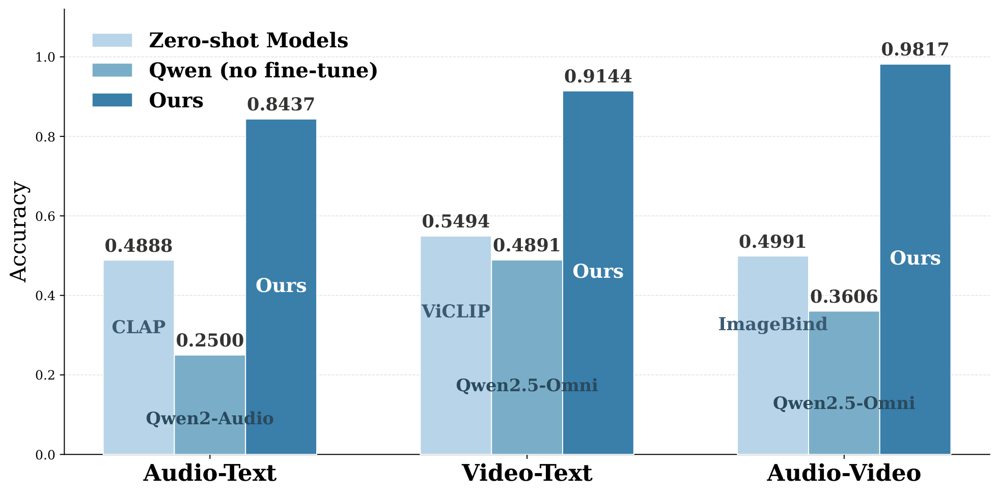
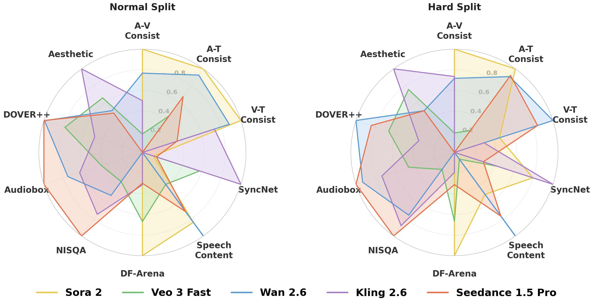
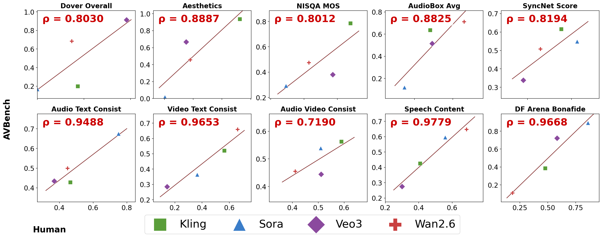

Gap 1: Coarse Evaluation
Existing benchmarks often miss fine-grained human-centric errors in speech, emotion, and interaction consistency.
Human-Aligned Automated Benchmark
AVBench targets the core bottleneck of modern T2AV systems: existing metrics miss subtle but critical human-centric failures. We provide a fully automated, fine-grained, and human-aligned evaluation protocol with specialized evaluators and continuous confidence scores.
Current AV-generation evaluation has three practical gaps that AVBench directly addresses.
Existing benchmarks often miss fine-grained human-centric errors in speech, emotion, and interaction consistency.
Off-the-shelf models capture broad semantics but fail to detect subtle cross-modal misalignment.
Binary or textual judgments are hard to optimize against; AVBench provides continuous confidence-based signals.

Figure 1. AVBench evaluates cross-modal consistency, speech-related attributes, and unimodal quality, enabling robust diagnosis in realistic human-centric generation scenarios.
All figures below are directly taken from the paper files.

Pipeline Overview

Data Distribution (Normal/Hard)

Hard Negative Taxonomy

Evaluator Reliability

Model Comparison Radar

Human Correlation Analysis
Rapid advances in audio-video generation have produced high-fidelity outputs, but evaluation remains a bottleneck. AVBench introduces a fully automated benchmark specialized for human-centric scenarios, with fine-grained metrics, dedicated evaluators, and strong alignment with subjective human judgments.
AVBench builds multi-dimensional hard negatives and trains specialized evaluators for AV/AT/VT consistency. Instead of discrete labels, it outputs continuous confidence scores, which are useful for reliable ranking, dataset filtering, and potential reward modeling.
A 10-dimension protocol covers cross-modal alignment, speech content/realism, and audio-video perceptual quality in realistic human scenes.
Dedicated AV/AT/VT evaluators are trained on large-scale hard negatives, greatly improving sensitivity to subtle semantic and temporal mismatches.
A Normal/Hard hierarchical split exposes robustness limits, and evaluator outputs align well with human preference annotations.
AVBench evaluates 10 dimensions across cross-modal alignment and unimodal quality.
AV Consistency, AT Consistency, VT Consistency, Lip Sync Consistency.
Speech Content, Speech Realism, Audio Quality, Audio Aesthetics, Video Quality, Video Aesthetics.
Quantitative results on AVBench Normal and Hard splits.
| Model | AV | AT | VT | SyncNet | SC | DF-Arena | NISQA | Audiobox | DOVER++ | Aesthetic |
|---|---|---|---|---|---|---|---|---|---|---|
| Sora 2 | 0.8713 | 0.5844 | 0.7599 | 4.9057 | 87.8391 | 0.4328 | 2.3784 | 3.1759 | 60.0125 | 4.0704 |
| Veo 3 Fast | 0.6924 | 0.5708 | 0.7235 | 6.5943 | 77.4950 | 0.3043 | 2.8191 | 3.5877 | 69.2275 | 4.9967 |
| Wan 2.6 | 0.8207 | 0.5826 | 0.7556 | 4.5016 | 91.5568 | 0.0441 | 3.0289 | 3.9271 | 71.6473 | 4.7790 |
| Kling 2.6 | 0.7626 | 0.5603 | 0.7501 | 8.1027 | 68.7844 | 0.1665 | 3.3141 | 3.8082 | 65.6786 | 5.4885 |
| Seedance 1.5 Pro | 0.6536 | 0.5764 | 0.7363 | 5.0146 | 84.9268 | 0.1602 | 3.6411 | 4.1686 | 71.7205 | 4.7373 |
| Model | AV | AT | VT | SyncNet | SC | DF-Arena | NISQA | Audiobox | DOVER++ | Aesthetic |
|---|---|---|---|---|---|---|---|---|---|---|
| Sora 2 | 0.9320 | 0.5573 | 0.7190 | 3.7932 | 76.7905 | 0.5498 | 2.0564 | 3.1339 | 58.1538 | 4.0434 |
| Veo 3 Fast | 0.7766 | 0.5130 | 0.6943 | 3.4535 | 70.3144 | 0.3827 | 2.3321 | 3.6113 | 67.0833 | 5.1438 |
| Wan 2.6 | 0.8780 | 0.5517 | 0.7482 | 3.0488 | 84.4512 | 0.0498 | 3.0726 | 4.0924 | 71.5229 | 4.7721 |
| Kling 2.6 | 0.8813 | 0.4970 | 0.7105 | 3.9844 | 69.0691 | 0.1469 | 3.2425 | 3.8912 | 62.9994 | 5.5033 |
| Seedance 1.5 Pro | 0.7409 | 0.5525 | 0.7398 | 3.3239 | 80.8029 | 0.2059 | 3.4093 | 4.1618 | 69.4430 | 4.7707 |
@inproceedings{avbench2026,
title={AVBench: Human-Aligned and Automated Evaluation Benchmark for Audio-Video Generative Models},
note={Preprint},
year={2026}
}